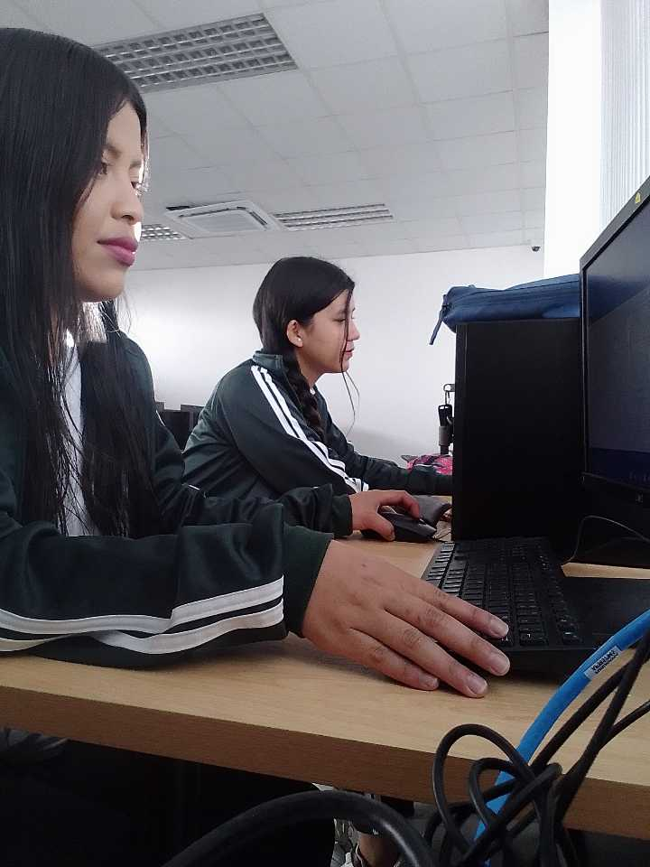

UNIDAD EDUCATIVA MALCHINGUI
Nombre: Jennifer Roldán
Curso: Tercero Técnico
MI EXPERIENCIA EN PASANTIAS
Empresa: Unidad Educativa "Malchinguí"

- Mi experiencia laboral en la Unidad Educativa Malchinguí fue algo inesperado ya que no estaba planeado que realicemos las prácticas aquí pero fuimos recomendadas o necesitadas aquí :) y nosotros aceptamos con gusto ya que estamos bastante familiarizadas con el tema de computadoras.
El primer día llegamos al colegio a las 7am como de costumbre y puntuales siempre, la licenciada Verónica nos recibió en su laboratorio ya que ese fue nuestro lugar de trabajo durante todo el mes. Lo que hicimos primero fue que la licenciada Verónica nos explicó todo lo que ibamos a realizar y nos mostró el formato con el que ibamos a trabajar en base a los bienes de toda la institución para crear el respectivo inventario.
Usamos las computadoras que estaban al lado de la licenciada Verónica ya que ella al inicio nos guió en todo lo que teníamos que hacer y todo lo que realizamos lo hicimos en Excel, comprobando cada bien que tiene la institución. Para ello tuvimos que recorrer todas las instalaciones de la Unidad Educativa donde contabamos los bienes y nos asegurabamos de que este el mismo número en el inventario entonces si era un poco cansado porque aveces las cosas no estaban en su lugar y en algunos casos nos tocó llevarlos a su lugar para que pueda cuadrar en el inventario y así escribir su respectivo código en un formato que creamos en Excel.
En los días que la licenciada se ausentaba por ciertos problemas nos tocó hacernos cargo de los estudiantes y dar indicaciones sobre lo que tenían que realizar, recuerdo que a los de 2do Técnico les enseñamos como aumentar formularios en Visual Basic algo que era nuevo para ellos, entonces eso fue una experiencia agradable porque enseñamos lo que nostros ya aprendimos.
La compañia de la licenciada Verónica fue algo grato ya que nos encariñamos con ella jiji y pasamos muy bien durante el trabajo que estabamos realizando. Nuestra hora de salida era a las 3pm y la hora de almuerzo 12.50 pm.
El último día de pasantías la licenciada Verónica nos invitó a comer un postre y nos agradeció por el tiempo que estuvimos con ella y por el trabajo que hicimos :D en fin, fue una linda experiencia, algo que solo se vive una vez <3